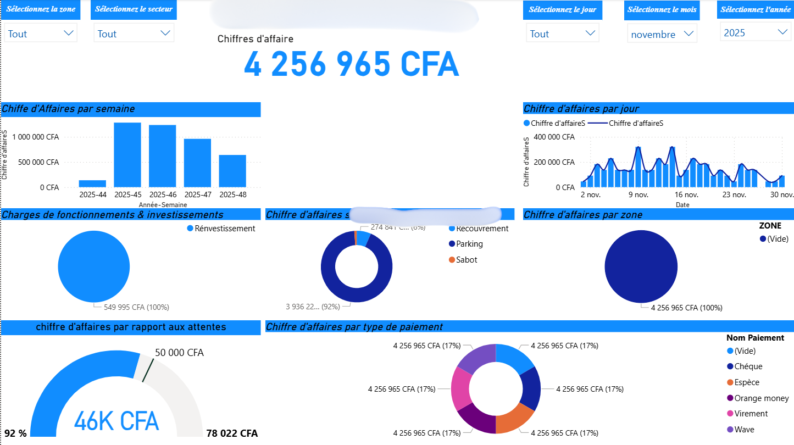

Système décisionnel Power BI – MOBI SENEGAL HOLDING
Projet de Business Intelligence en production développé durant mon stage (3 mois), puis consolidé et étendu pendant un CDD. Le projet a évolué d’un dashboard exploratoire vers un système complet de pilotage financier et opérationnel.
Objectifs
- Centraliser les données opérationnelles et financières
- Automatiser la collecte depuis Google Sheets
- Fournir des tableaux de bord fiables et dynamiques
- Permettre un accès en temps réel via Power BI Service
- Produire des rapports périodiques et d’urgence
Périmètre couvert
- Chiffre d’affaires : Sabot, Parking, Recouvrement
- Charges de fonctionnement
- Journal de caisse
- Investissements & réinvestissements
- Rémunérations
- Logistique
- Analyse par zone, agent, secteur, période
Architecture technique
- Source : Google Sheets (données terrain)
- ETL : Script Python (collecte, nettoyage, structuration)
- BI : Power BI Desktop (modèle & visualisations)
- Diffusion : Power BI Service (rapports en ligne)
Actualisation des données
- Exécution du script Python
- Actualisation du modèle Power BI Desktop
- Publication vers Power BI Service
- Données disponibles pour les utilisateurs concernés
Types de rapports
- Rapports hebdomadaires
- Rapports mensuels
- Rapports d’urgence en cas de situation critique
Technologies
- Power BI Desktop & Power BI Service
- Python (pandas, automatisation)
- Google Sheets & Google Drive
- Analyse financière & Data Visualisation
Captures du système



Les rapports sont accessibles en ligne via Power BI Service et utilisés pour la prise de décision opérationnelle et stratégique.